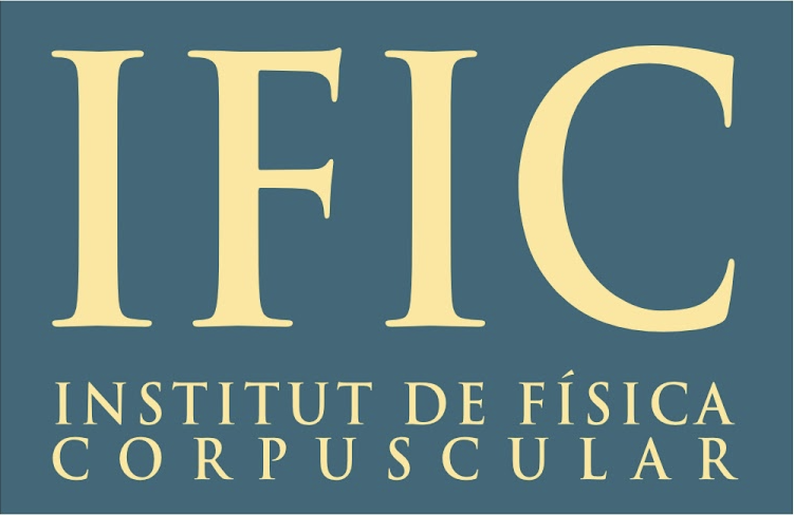
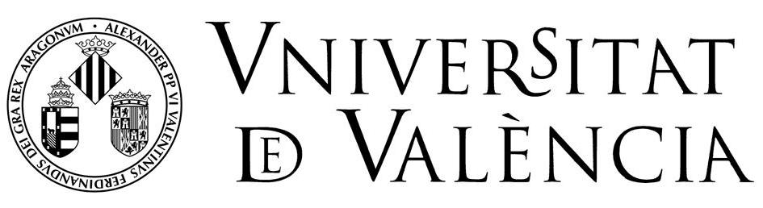
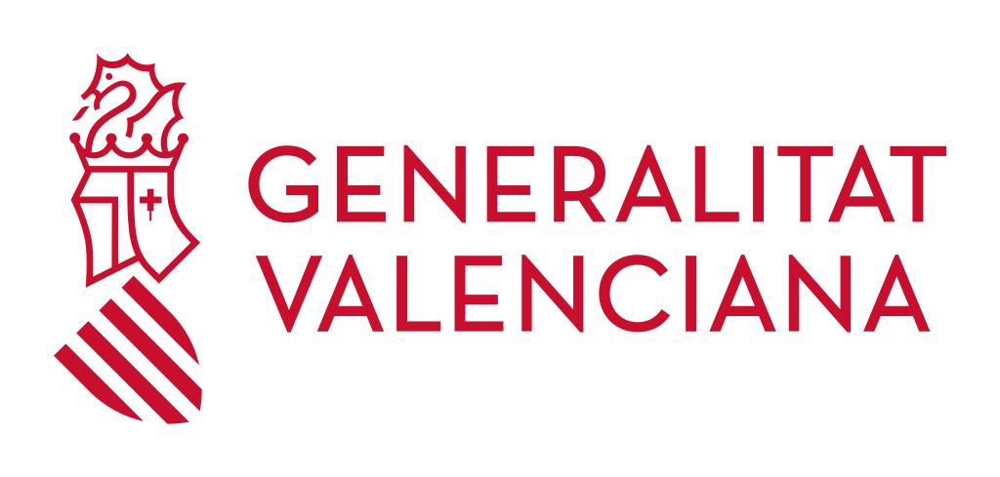
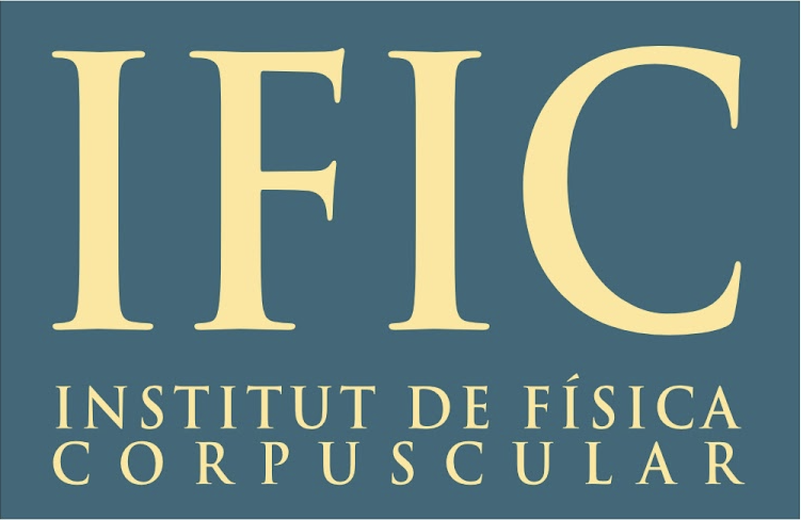
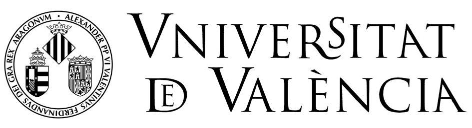
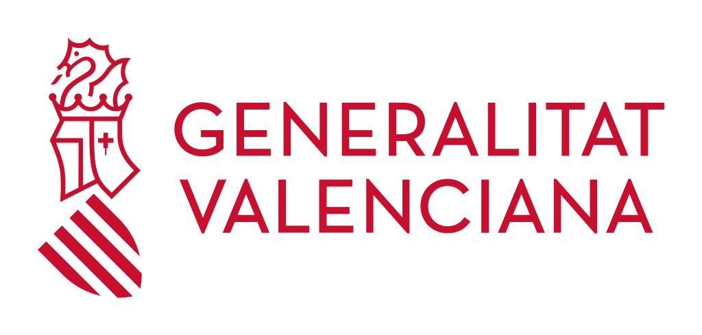

Hi everyone! I am a PhD Student of Theoretical Physics within the Instituto de Física Corpuscular (IFIC), a mixed centre between the Consejo Superior de Investigaciones Científicas (CSIC) and the University of Valencia (UV). I am a member of the SOM (Sabor y Origen de la Materia) group, and I give lectures as part of the Department of Theoretical Physics of the University of Valencia. I obtained the degree in Physics and the Master in Advanced Physics with specialization in Theoretical Physics at the UV.
I am a neutrino physicist interested in the role that the neutrino particle plays in Cosmology and Astroparticle Physics, where we can use neutrinos to disentangle some unknowns of the Universe as well as the different natural neutrino sources in order to probe properties of the neutrino particle. This makes my work a combination of coding (of course I mean debbugging) plus pen and paper calculations in order to understand the physics behind. In order to work on this field it is required a lot of knowledge in Quantum Mechanics, Cosmology, Astrophysics, Particle Physics, Statistics and Computer Programming. I know how to code in Python, C++, C, Mathematica, LaTeX and I learned html to set up this webpage.


 




